Page 101
Module 2 — Getting Started | Pages 95-106
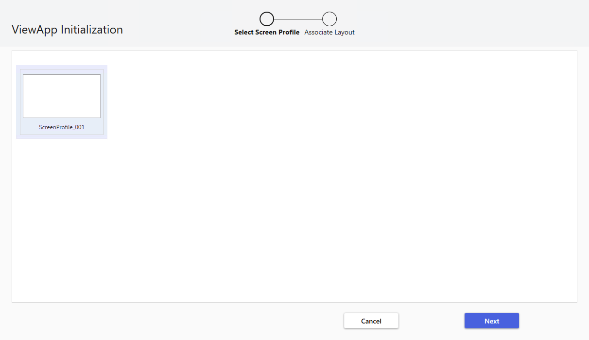
Section 4 – ViewApps
Section 4 – ViewApps
Introduction
$ViewApp is provided in the Galaxy as a base system object to create Operations Management
Interface applications. A derived ViewApp template can be configured in the ViewApp Editor for
creating a view application as needed. After a derived ViewApp object is configured, an instance
can be derived and deployed to run the view application.
Derive a ViewApp Template
To create a ViewApp, you must derive a ViewApp template from the $ViewApp base system
object, initialize and configure the template, and then derive a ViewApp instance from the ViewApp
template.
ViewApp Initialization
The first time you open the derived ViewApp template, the ViewApp Initialization wizard appears
so that you can select a screen profile and layouts for the screens to use in the ViewApp.
From the Templates tab, double-click the new derived ViewApp template. The ViewApp
Initialization wizard appears. On the first wizard page, select a screen profile and click Next.
This section introduces the ViewApp object, including its editor, capabilities, and components.
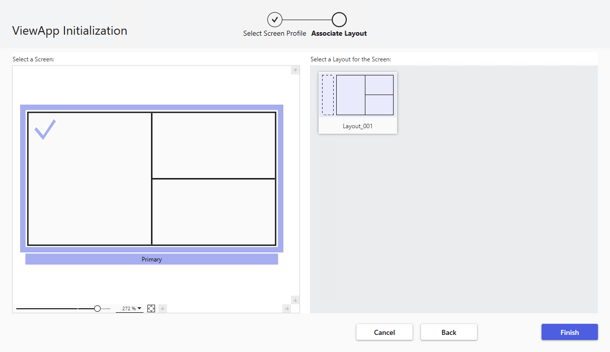
On the second wizard page, select a screen and a layout for that screen and click Finish. You can
assign layouts to additional screens through this wizard page, but at a minimum, you must specify
a layout for at least one screen in the profile.
Once you click Finish, the ViewApp Editor appears.
The initialization wizard appears only the first time a derived ViewApp template is opened.
However, you can edit or change screen profiles and layouts from the ViewApp Editor.
ViewApp Editor
You use the ViewApp Editor to build a ViewApp and perform operations such as:
Configure and customize the navigation model for the ViewApp
Edit or change the screen profile associated with the ViewApp
Edit, change, or remove a layout associated with the ViewApp
Edit or add content to layout panes
Test the ViewApp in preview mode, without deploying or redeploying the instance
If you are configuring a derived ViewApp template for the first time, the ViewApp Initialization
wizard will appear first. The ViewApp Editor will open when you click Finish from the Initialization
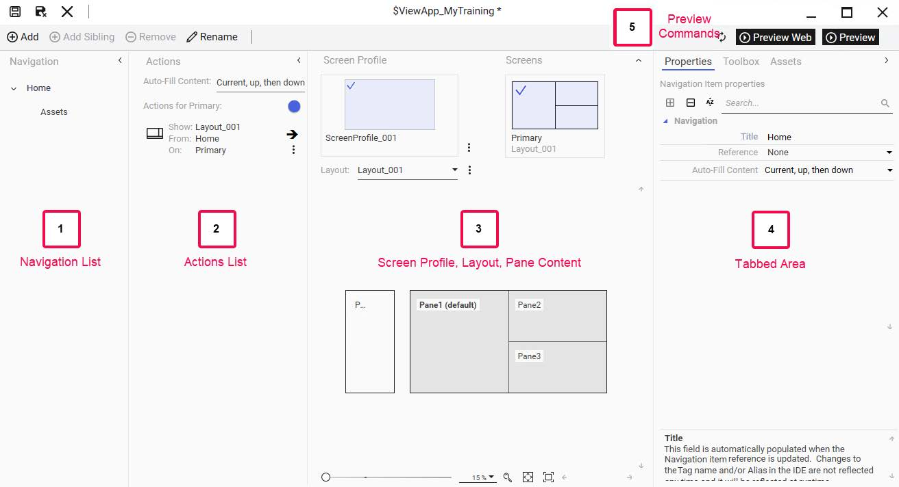
Section 4 – ViewApps
wizard. Otherwise, you can open the ViewApp Editor by double-clicking the derived ViewApp
template from the Templates tab.
(1) Navigation List: Shows the hierarchy of items in the navigation model for the
ViewApp. The default built-in navigation model is based on the plant model, but the
navigation model can be customized.
(2) Actions List: Shows a list of content assigned to the panes of the layout applied to the
selected screen. By default, it lists items for the primary screen.
(3) Selected Screen Profile, Layout, Pane Content: Shows the screen profile and layout
associated with the ViewApp. Zoom and pan controls are available for display.
(4) Tabbed Area:
Properties tab provides access to all available properties for navigation items and
content.
Toolbox tab provides access to symbols and controls from the Graphics tab.
Assets tab provides access to the Model view of the Galaxy.
A search field is available for all tabs. A preview area is available at the bottom of the
tabbed area for previewing available content, such as graphics and assets.
(5) Preview Commands: Allow you to view the ViewApp in a preview session and enable/
disable automatic updates for the preview session.
ViewApp Navigation
The navigation mechanism within a ViewApp controls the presentation of content at runtime. For
example, a ViewApp can include a tree control that shows the hierarchical organization of the built-
in navigation of the ViewApp. Selecting an item from the tree at runtime displays corresponding
content in one or more panes of the ViewApp layout.
As another example, consider a pane with Enable Hierarchy Navigation and Show Navigation
Buttons properties checked. A navigation tool appears on the top or bottom of the pane when the
user hovers a mouse over the pane at runtime, allowing the user to navigate to the “next” or
“previous” sibling navigation item as reflected in the defined navigation hierarchy of the ViewApp.
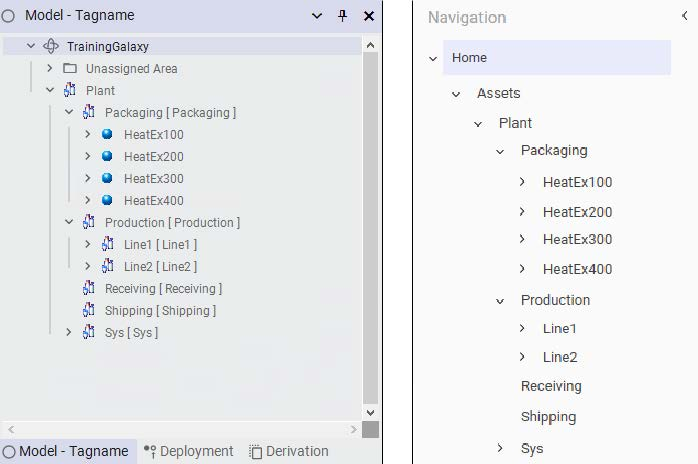
• Production [Production]: Line1, Line2, Receiving, Shipping, Sys
• Tabs at bottom: Model - Tagname (selected), Deployment, Derivation
Right Pane - "Navigation" (ViewApp navigation list):
• Tree mirrors left pane: Home → Assets → Plant
• Packaging (HeatEx100-HeatEx400)
• Production (Line1, Line2, Receiving, Shipping, Sys)
• Menu icon at top-right for additional options
• "In the System Platform IDE Model view, it is possible to assign alias names to objects to provide more meaningful names for operators. The alias names appear in the navigation model of a running ViewApp and in preview mode."]
There are three essential components of ViewApp navigation:
Navigation model: Defines a hierarchy of navigation items, references to visual content
used by navigation-aware controls, and actions to execute for a navigation item. The
navigation model drives the presentation of content from a layout or ViewApp to the
screen viewed by a user.
Navigation item: A unique element in the navigation model that contains the necessary
information to show a visual representation of an item and triggers one or more navigation
actions after being selected during runtime.
Navigation actions: Navigation behavior during runtime by navigation-aware controls to
show information present in the navigation model.
Both the Layout Editor and the ViewApp Editor provide integrated components and properties for
configuring ViewApp navigation.
Built-In Navigation
By default, the built-in ViewApp navigation model reflects the plant model for the Galaxy.
In the navigation list in the ViewApp Editor, the root of the model is named Home, with Assets
shown as a top-level item for objects as reflected in the Model view.
The navigation is customizable. For example, you can add and remove custom navigation items to
the navigation hierarchy. The root item (named Home by default) cannot be deleted, but it can be
renamed.
Section 4 – ViewApps
Auto-Fill
Auto-Fill is a navigation behavior that controls how content is automatically placed in panes,
without having to configure each view of a running ViewApp.
To use this feature:
The layout panes of the ViewApp must have the Use For Auto-Fill property enabled.
The navigation items of the ViewApp must have Auto-Fill Content configured as Current
only; Current, then up; or Current, up, then down; but not None.
In the ViewApp Editor, Auto-Fill Content only needs to be configured for each top-level navigation
item, which by default includes Home and Assets.
Auto-Fill Content options are:
Current only: At runtime, content from the current navigation item is automatically placed
in available panes of the layouts assigned to screens of the screen profile. If there is no
layout assigned to screens for the current navigation item, layouts assigned to screens for
the Home navigation item are displayed and used for auto-fill content associated with the
current navigation item.
Current, then up: At runtime, Auto-Fill searches for layouts that initially fill the screens
prior to determining the content to be shown in specific panes. The current navigation item
is inspected for any commands that place layouts or content full screen. For screens that
remain empty, Auto-Fill examines the parent navigation item up to the root of the
navigation hierarchy for additional content to apply to the empty screens. After content has
been assigned to screens, any content residing on the current navigation item is shown on
the screen using the best available pane algorithm for each individual piece of content.
Current, up, then down: Similar to Current, then up with an additional action. At runtime,
if the Auto-Fill search reaches the root of the navigation hierarchy and there are still empty
screens or panes, the first child of the current navigation item is inspected to see if it has
content that applies to the available screens or panes. This process continues down the
navigation hierarchy by inspecting the first child navigation item at each level until arriving
at a leaf node. Then, Auto-Fill stops.
None: At runtime, no content associated with this navigation item is automatically shown
unless specific commands have been created to show content in a running ViewApp.
Content must be manually assigned to specific panes when configuring the ViewApp.
Content Navigation
At runtime, content for a navigation item is displayed in the layout panes of a ViewApp based
on the:
Content types of the content found from the navigation
Available panes configured to display content with those content types
Auto-Fill settings
Auto-Fill settings include the Use For Auto-Fill property configured for layout panes, as well as the
Auto-Fill Content property associated with navigation items. Panes enabled for Auto-Fill have their
Use For Auto-Fill property checked. Navigation items enabled for Auto-Fill have their Auto-Fill
Content property set to an option such as Current only; Current, then up; or Current, up, then
down.
With Auto-Fill in effect, if there are panes available to receive the content types of the content in
the current navigation item, parent items, and child items, the panes will be populated with that
content.
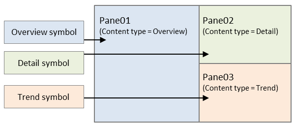
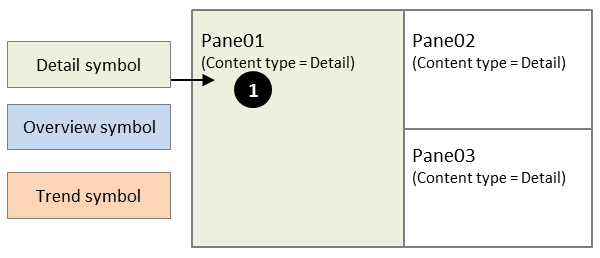
For example, assume that the Auto-Fill Content property for the current navigation item is Current
only. The navigation item contains three symbols with content types of Overview, Detail, and
Trend. If three panes with content types that match the content types of the symbols are available,
the panes will be populated at runtime as follows:
If multiple panes configured for the same content types are available, but there is only one symbol
with a content type that matches the panes, then only that symbol will be populated in one of the
panes. Panes are filled in alphabetical order of the pane names. In the following example, only the
Detail symbol is filled to Pane01.
Additionally, multi-content panes can be the destination of multiple content items for an Auto-Fill
navigation action. Multi-content panes include panes with a presentation style of Tabbed or
Multiple.
As another example, assume that the Auto-Fill Content property for the current navigation item is
Current, then up. The current navigation item contains one symbol with a content type of Trend.
Only Pane03 is available to display Trend content, so Pane03 is filled first with the Trend symbol.
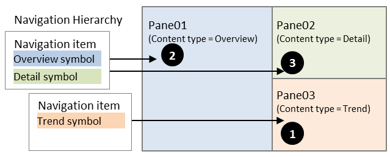
Section 4 – ViewApps
However, additional panes are available for content and the Auto-Fill Content property for the
navigation item is Current, then up. So, the next navigation item up from the current navigation
item is inspected for possible content items to display in the available panes. An Overview symbol
and a Detail symbol are found, which matches the content types for the available panes. So
Pane01 is filled next, followed by Pane02.
Preview Mode
You can use the preview mode from the ViewApp Editor to test your ViewApp without deploying or
redeploying it to runtime. The preview session launches immediately and runs in a separate
window to show the current content and ViewApp configuration. The current navigation item in the
preview session is based on which navigation item is selected in the ViewApp Editor.
The preview session can be kept open while editing the ViewApp in the ViewApp Editor.
Additionally, the preview feature supports an automatic update mode. With automatic update
enabled, the preview refreshes to show updates when you save changes to the ViewApp.
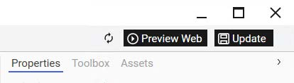
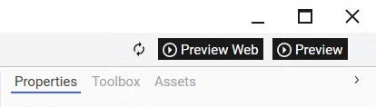
Update a Preview Session
If a preview session is active and changes are made to the ViewApp in the ViewApp Editor but not
saved, the Preview button changes to Update. Clicking Update will save and update the changes
in the preview session.
Automatic Update Mode
Preview mode supports an automatic update option. It is enabled by default, but you can disable it
or enable it again by clicking the automatic update toggle icon on the left side of the Preview
button.
When automatic update is enabled, changes saved to the ViewApp are automatically
reflected in the preview session.
When automatic update is disabled, changes saved to the ViewApp can be reflected in
the preview session by manually clicking Update.
Close a Preview Session
To close the preview, you can click the Close button, which is the X icon in the upper-right corner of
the preview display. Note that closing the ViewApp Editor also closes the preview session.
Derive a ViewApp Instance
Once the derived ViewApp template is configured, a ViewApp instance object can be derived from
the derived ViewApp template. Right-click the derived ViewApp template and select New |
Instance. In the Deployment view, the ViewApp instance must be hosted by a ViewEngine object
before it can be deployed to the target node where the application will run.
Note that:
You cannot derive an instance directly from the $ViewApp base system object. The
instance must be derived from a derived ViewApp template.
In Deployment view, only ViewEngine objects can host ViewApp objects. The host
ViewEngine object must be deployed before ViewApp instances can be deployed.
In Model view, a ViewApp object can be assigned to an area object to organize the
ViewApp instances.
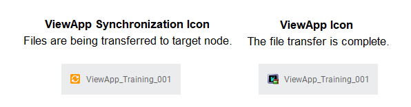
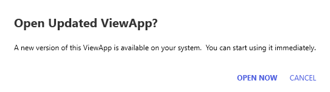
Section 4 – ViewApps
Deploy a ViewApp
ViewApp instances are deployed like other objects from the System Platform IDE. For example,
you can right-click the ViewApp instance from Deployment view and select Deploy with the
applicable deployment options to use. Progress and status of the deployment operation are
displayed.
ViewApp application files are asynchronously transferred to the target node at the end of the
deployment operation. While this happens, an orange icon appears for the ViewApp application in
Deployment view. Once the files are transferred to the target node, the icon for the ViewApp
application changes as shown below, and the ViewApp can be launched with the AVEVA OMI
Application Manager or the AVEVA Application Manager. You can deploy multiple instances of a
ViewApp to the same node. Multiple instances of the same view application can be running on a
node.
Note that if changes are made to the derived ViewApp template for which its instance object is
already deployed, the icon for the instance object will change to reflect deployed, but pending
configuration changes. If you attempt to redeploy a ViewApp that is running, the following
message appears, allowing you to choose to update the running ViewApp.
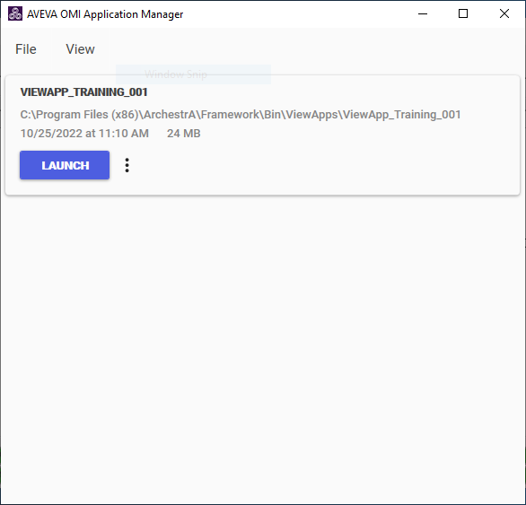
Launch a ViewApp
Operations Management Interface ViewApps can be launched with the AVEVA OMI Application
Manager or the InTouch HMI Application Manager. You can find these application managers from
the Windows Start menu. A shortcut to the AVEVA OMI Application Manager is provided on the
node where the Operations Management Interface runtime components were installed.
With the AVEVA OMI Application Manager, ViewApps are listed by the names of their associated
ViewApp instance objects, along with other information such as the path to the location of the View
application’s files on the target node, the size of the application, and the date and time it was
deployed. Multiple ViewApps can be deployed and running the same node.
The AVEVA OMI Application Manager is used to launch Operations Management Interface
ViewApps. It is not used to launch InTouch or InTouch for System Platform view applications.
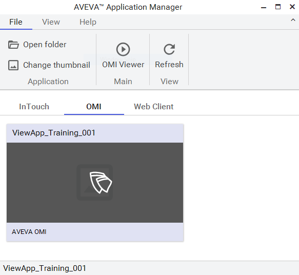
Section 4 – ViewApps
With the AVEVA Application Manager, deployed ViewApps appear on the OMI page as shown in
the following example. You can click the Details button to view the path to the location of the View
application’s files on the target node, the date and time it was deployed, and other information.
In addition to launching Operations Management Interface applications, the AVEVA Application
Manager can also be used to launch InTouch applications.
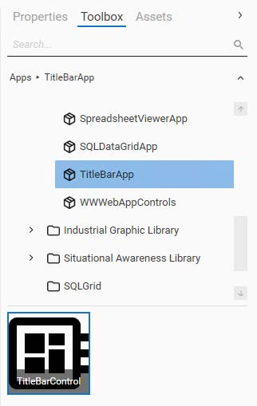
TitleBarApp
The TitleBarApp is an OMI App that shows title bar information in a running ViewApp.
Assign TitleBarApp to a Pane
You can add the TitleBarApp to a pane from the Layout Editor or the ViewApp Editor. Select the
TitleBarApp from the Toolbox tab, and from the preview area, drag TitleBarControl to the pane.
The TitleBarControl would typically be used in a pane placed at the top of a ViewApp window.
Configure the TitleBarApp
Properties available for configuring the TitleBarApp include settings to specify the appearance of
the title bar, text to display in the title bar, and functional components to add to the title bar. They
are organized into categories as shown below:
Appearance: Properties that specify visual characteristics of the TitleBarApp, such
foreground and background color, font for text, and more. You can also enable a
secondary row in the TitleBarApp.
Content and Display Area: Properties that specify content to be displayed on the
TitleBarApp and their locations. For example, you can configure the Home button to
display on the left side of the primary row.
Window Buttons: These properties allow you to enable the minimize, maximize, and
close buttons. Close buttons include buttons to close the ViewApp and close the layout
window.
Review the key concepts section above for the core topics discussed.
Consider how the concepts in this lesson fit into the broader System Platform and OMI framework.